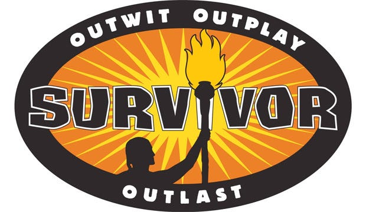

Using data from Spotify and historical Billboard Hot 100 charts, the purpose of this project was to determine how Top 40 hits have changed throughout the decades based on musical elements, explicitness, length, and genre classifications.

The following project is a job simulation task for British Airways, taken from forage.com. The purpose of the first task was to scrape customer reviews for British Airways from airlinequality.com, and use sentiment analysis to classify customer opinions. The purpose of the second task was to build a predictive model to determine which factors were most important in determining whether customers completed a booking with British Airways or not.
Using data scraped from KGET's Kern County Homicide tracker, the purpose of this project was to analyze trends in Kern County homicides from 2016 to 2023.
Using Los Angeles County crime data from 2020-2023, the purpose of this project was to analyze crime patterns based on LAPD divisions, demographic factors, time of day, and crime type. The link below is for the interactive dashboard created using Plotly Dash; the link at the top goes to the exploratory analysis and coding housed in github.
The purpose of this project was to create a model to predict the likelihood of a top-5 Hart Trophy (MVP) finish for players. The data includes the top 50 point leaders from all post-lockout seasons, and does not factor in goalies. Code for a basic flask app is included as well.

Using NHL data from 1979 to 2024, the purpose of this project was to analyze NHL trends by team, decade, and year for stats such as goals scored per game, goals allowed per game, penalty kill percentage, powerplay percentage, and points percentage. Decade trends and league analysis in located in the link above. An interactive dashboard focused on team data is linked below. Data was compiled with 3 weeks left of the 2023-2024 regular season, so the final numbers will differ slightly.
The purpose of this project was to use historical customer data from Telco, an internet and phone service company, to determine the most important factors predicting customer churn.

Using historical contestant data from the TV show Survivor, the purpose of this project was to analyze if there were demographic differences between "First Boots" - the first contestants voted off the island - and "Sole Survivors" - the ultimate winners of the show.

Includes Juptyer Notebook file used to clean and manipulate datasets for later use in Tableau, as well as other projects such as a used car price predictor using linear regression.

Assignments using ggplot, piping, dplyr functions, linear regression, and logistic regression in R. BRFSS2015 is the final assignment.

SQL practice files. Includes practice using various joins, window functions, primary and foreign keys, constraints, functions, triggers, procedures, importing data sources, and practice creating a mini NHL Database.

Includes tableau dashboards created for various datasets.